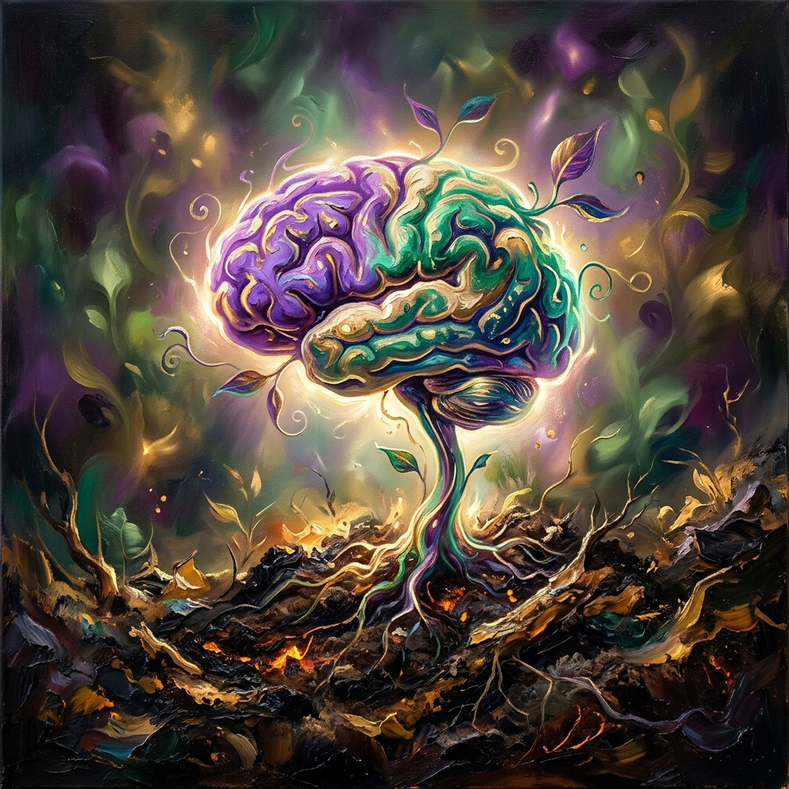
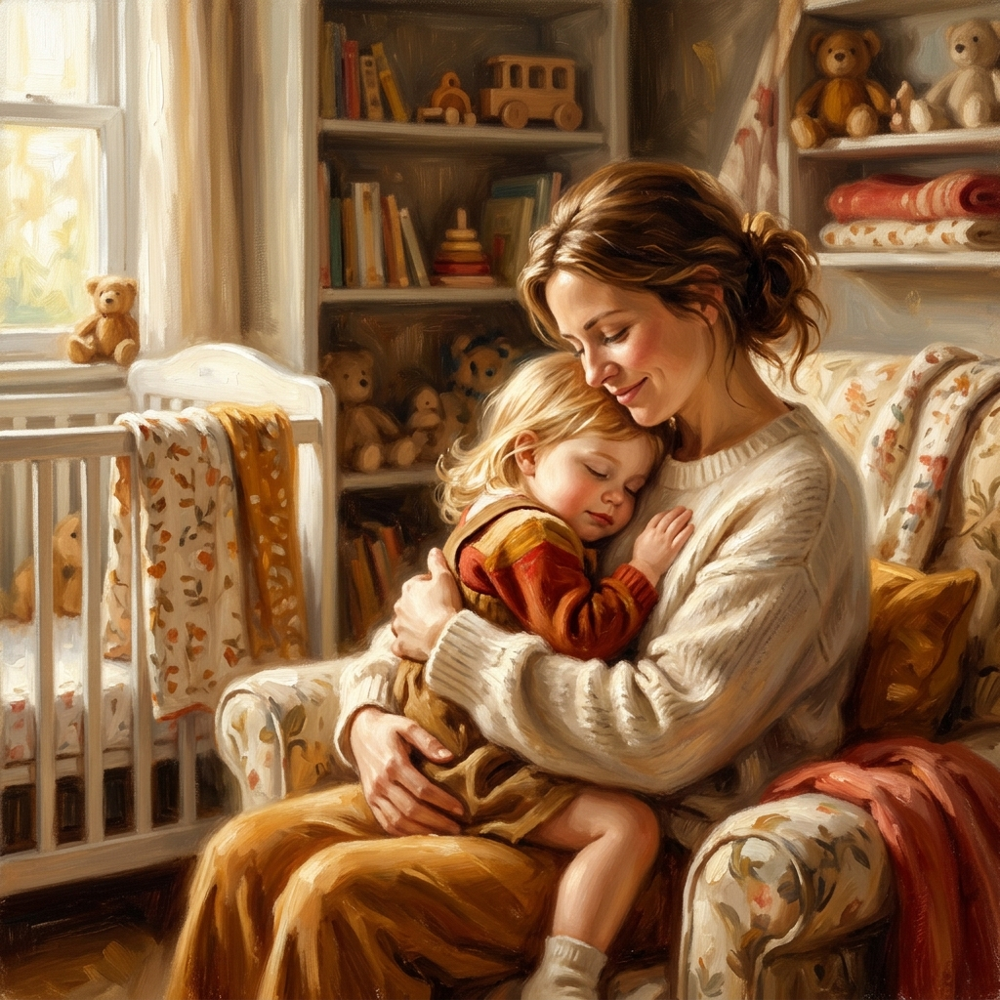

Shichida Makoto — Giáo dục sớm đánh thức thiên tài trong con


Thời lượng đọc sách: ~25 phút (tương đương 6,500 từ) |
Độ khó học thuật: Nâng cao (Tâm lý học hành vi & Thuyết gắn bó)
Khái niệm cốt lõi: Thuyết gắn bó cơ bản, Đường cong nghiêm khắc, Giáo dục ý chí kiềm chế, 4 căn nguyên phạm pháp
Cốt lõi trong một câu: Kỷ luật và lễ nghĩa của trẻ không phải là sự áp đặt lạnh lùng, mà phải được xây dựng dựa trên niềm tin gắn bó mật thiết (Basic Trust) có được từ sự ôm ấp da thịt và thấu hiểu tín hiệu cảm xúc của người mẹ trước 8 tháng tuổi.
Vấn đề đặt ra (The Setup): Sự suy thoái đạo đức, hành vi phạm pháp ở thiếu niên bắt nguồn từ cách dạy dỗ sai lệch của cha mẹ lúc nhỏ: nuông chiều vô điều kiện, cấm đoán quá mức hoặc làm thay mọi việc khiến trẻ thiếu khả năng kiềm chế bản thân.
Luận điểm chính (The Argument): Giáo dục lễ nghi thực chất là giáo dục ý chí (sự nhẫn nại, thắng được dục vọng ích kỷ của bản thân) và phải được hoàn thiện trước 3 tuổi. Cha mẹ cần áp dụng "đường cong nghiêm khắc" (giảm dần từ sơ sinh đến lớn) và dạy trẻ tự giác làm việc nhà.
Bằng chứng hỗ trợ (The Evidence): Thuyết gắn bó (Erikson/Bowlby); lý thuyết đường cong xã hội của Ruth Benedict trong "Hoa cúc và thanh kiếm"; nghiên cứu lâm sàng của bác sĩ Sugita; và câu chuyện phản kháng tâm lý thi trượt đại học 4 lần của Akio.
Ý nghĩa thực tiễn (The Implications): Ôm ấp trẻ sơ sinh tối đa, tuyệt đối không gửi nhà trẻ quá sớm; giải quyết tật mút tay và bướng bỉnh khi sinh em bằng cách gia tăng ôm ấp yêu thương; chỉ mắng khi vi phạm 4 cấm kỵ (ích kỷ, ức hiếp, dối trá, phản kháng); và làm gương đạo đức.
Trích dẫn tác phẩm kinh điển "Hoa cúc và thanh kiếm" (The Chrysanthemum and the Sword) để chỉ ra sự khác biệt: Mỹ nghiêm khắc khi trẻ nhỏ và nới lỏng khi lớn; Nhật nuông chiều lúc nhỏ và nghiêm khắc lúc lớn. Shichida đồng ý với mô hình Mỹ: cần thiết lập khuôn khổ thép từ sớm và nới lỏng khi trẻ có lý tính. Ch 3 · §2
Sử dụng các nghiên cứu lâm sàng của nhà giáo dục Sugita về hành vi chống đối xã hội ở thiếu niên. Mút tay kéo dài hay ăn cắp vặt lúc 3 tuổi thực chất là phản xạ tự xoa dịu vô thức khi thiếu thốn sự ôm ấp từ mẹ. Phương pháp điều trị hiệu quả là trao tình thương và khen ngợi, thay vì trừng phạt. Ch 3 · §1 & §3
Lý thuyết nền tảng của Shichida về niềm tin cơ bản giữa trẻ và cha mẹ được thiết lập quanh mốc 8 tháng tuổi. Giai đoạn này quyết định tâm hồn trẻ có phát triển khỏe mạnh, coi trọng bản thân và biết thấu hiểu người khác hay sẽ luôn mang sự bất an sâu sắc suốt cả đời. Ch 3 · §1
So sánh hai mô hình giáo dục nghiêm khắc của Nhật Bản và Hoa Kỳ theo phân tích của Ruth Benedict:
| Tiêu chí so sánh | Mô hình Nghiêm khắc của Nhật Bản | Mô hình Nghiêm khắc của Hoa Kỳ (Khuyên dùng) |
|---|---|---|
| Độ tuổi nghiêm khắc nhất | Tuổi trưởng thành (Học cấp 3, thi đại học, đi làm) | Giai đoạn sơ sinh đến 3 tuổi (Hình thành ranh giới vô thức) |
| Độ tuổi tự do nuông chiều | Giai đoạn sơ sinh đến 6 tuổi (Cho phép kiêu căng, ích kỷ) | Tuổi trưởng thành (Được nới lỏng khuôn khổ, tự do quyết định) |
| Phương thức quản lý hành vi | Lúc nhỏ thả lỏng, lớn lên bắt đầu ép vào kỷ luật xã hội | Lúc nhỏ uốn nắn từ việc nhỏ, lớn lên dạy bằng cách đối thoại bình đẳng |
| Hệ quả khi áp dụng sai | Trẻ dễ tùy tiện, phản kháng mạnh khi lớn, có xu hướng phạm pháp | Nếu quá khắc nghiệt lúc nhỏ không kèm yêu thương sẽ gây tổn thương gắn bó |
Nguyên tắc phân loại hành vi để mắng uốn nắn hoặc bỏ qua, bảo vệ lòng tự tin của trẻ:
| Loại hành vi của trẻ | Phản ứng của cha mẹ | Nguyên nhân & Bản chất | Cách xử lý đúng đắn |
|---|---|---|---|
| Ích kỷ / Ức hiếp em / Nói dối / Phản kháng hỗn láo | Nghiêm khắc uốn nắnVi phạm nghiêm trọng 4 điều cấm kỵ đạo đức | Kiên quyết ngăn chặn ngay lập tức, giải thích rõ hành vi sai trái bằng giọng nghiêm nghị | |
| Mút tay khi cai sữa / Đòi bế nựng lại khi sinh em | Dung hòa tình thươngBản chất là tiếng kêu cứu cảm xúc do bất an | Đáp ứng bằng sự ôm ấp da thịt nhiều hơn, cho trẻ lớn ngủ chung, khen ngợi hành động độc lập của trẻ lớn | |
| Làm vỡ bát đĩa / Đổ nước / Gây tiếng ồn khi chơi | Bỏ qua / Không mắngHành vi tai nạn vô ý trong sinh hoạt hằng ngày | Tuyệt đối không trách phạt, hướng dẫn con cùng mẹ dọn dẹp sạch sẽ để rèn tính trách nhiệm | |
| Làm việc nhà dở dang / Cài lệch cúc áo / Quét nhà bẩn | Khen ngợi nỗ lựcTrẻ đang cố gắng học cách tự lập & lao động | Khen ngợi ý thức giúp đỡ của trẻ, tuyệt đối không sửa sai trực tiếp trước mặt con làm con tự ái |
"Những nhu cầu như ăn uống, ngủ nghỉ, chơi đùa, lòng hiếu kỳ, sự kinh ngạc là những hành động và cảm xúc tự nhiên và chẳng ai có thể ngăn lại được. Nếu ngay từ đầu đời, cha mẹ đáp ứng đầy đủ các nhu cầu này thì sau này trẻ sẽ tự phát triển thành người biết nghĩ cho chính mình và cho người khác."
— Shichida Makoto, triết lý giáo dục thuận tự nhiên. Ch 3 · §1
"Việc đầu tiên phải nghĩ đến trong việc dạy lễ nghi phép tắc là phải giáo dục ý chí cho trẻ, có nghĩa là, phải bồi dưỡng để trẻ có ý chí thật mạnh mẽ... Ý chí mạnh mẽ tức là trong lòng trẻ không có ý nghĩ kiêu căng, ngạo mạn, mà ngược lại, phải mạnh mẽ để thắng được những tình cảm và dục vọng của bản thân."
— Shichida Makoto, định nghĩa về bản chất của kỷ luật. Ch 3 · §2
"Cháu X đã giả làm người mua hàng và ăn cắp đồ trong cửa hàng. Hành vi đó thực ra chỉ là hành động thay thế cho việc trẻ vô thức muốn kiếm tìm tình yêu thương của cha mẹ... Tôi bảo cha mẹ hãy tìm điểm tốt của con rồi khen. Chỉ mấy tháng sau cháu X đã sửa được tính cách đó."
— Shichida Makoto, bài học về sức mạnh phục hồi của tình yêu thương. Ch 3 · §3
Nội dung chính: Trình bày phương pháp dạy lễ nghĩa cho trẻ từ 0 đến 3 tuổi. Chia làm ba cột trụ: phép tắc cơ bản, phép tắc tinh thần, và phép tắc đạo đức/xã giao.
Lập luận: Tác giả sử dụng các case-study tâm lý học hành vi (như Akio thi trượt 4 lần, cháu X ăn cắp vặt) để chứng minh hành vi hư hỏng ở trẻ thực chất là tiếng kêu cứu đòi hỏi tình yêu thương.
Bối cảnh xã hội: Phản ánh cuộc khủng hoảng gia đình Nhật Bản thập niên 80 khi cha mẹ quá bận rộn kiếm tiền, phó mặc con cho nhà trẻ và bù đắp bằng sự nuông chiều vật chất một cách sai lầm.
Hạn chế: Quan điểm "nghiêm khắc nhất lúc 0 tuổi" có thể bị lạm dụng nếu cha mẹ thiếu sự nhạy cảm cảm xúc. Trẻ dưới 1 tuổi chưa có ý thức về kỷ luật, việc quá cứng rắn có thể làm đứt gãy sự gắn bó an toàn.
Ý tưởng mới: Ứng dụng "Bảng giao ước gia đình" bằng tranh ảnh cho trẻ từ 2 tuổi để trẻ tự theo dõi việc dọn đồ chơi thông qua sticker tích điểm thưởng, thay thế việc cha mẹ phải cằn nhằn nhắc nhở.
• Cần áp dụng đường cong nghiêm khắc giảm dần: kiên quyết từ chối đòi hỏi ích kỷ của trẻ trước 3 tuổi để trẻ học cách kiểm soát dục vọng bản thân.
• Phản đối việc nuông chiều thả lỏng trẻ tự do vô lối dưới 3 tuổi.
• Gentle Parenting (Nuôi dạy ôn hòa): Không đồng tình với thuật ngữ "nghiêm khắc" ở tuổi sơ sinh. Trẻ dưới 1 tuổi chưa có khả năng thao túng hay ích kỷ có ý thức; mọi tiếng khóc đều là nhu cầu sinh lý chính đáng cần được đáp ứng 100%.
• Rủi ro stress gia đình: Cha mẹ cố gắng thiết lập kỷ luật quá sớm dễ gây căng thẳng thần kinh cho cả nhà. Trẻ cần được tự điều chỉnh cảm xúc (co-regulation) thông qua sự điềm tĩnh của cha mẹ thay vì sự trừng phạt.
• Đáp ứng lập tức tiếng khóc đòi bú của bé. Không áp dụng giờ ăn máy móc.
• Ôm ấp, vuốt ve bé nhiều lần trong ngày. Ngủ cùng con để tạo sự an tâm cảm xúc tối đa. Ch 3 · §1
• Rèn thói quen tự lập: cho con tự xúc ăn bằng thìa (từ 1 tuổi) và tự mặc quần áo (từ 3 tuổi) dù rơi vãi hay vụng về.
• Áp dụng nguyên tắc "4 Điều Cấm Kỵ": chỉ mắng uốn nắn khi ích kỷ, nói dối, hỗn láo, làm đau em. Ch 3 · §2 & §3
• Cho trẻ 3 tuổi phụ việc nhà đơn giản: lau bàn ăn, rửa bát nhựa, tự cất dọn đồ chơi lên giá.
• Luôn nói lời "Cảm ơn" khi con giúp đỡ và khen ngợi nỗ lực của con thay vì cằn nhằn sửa lỗi. Ch 3 · §3
Dán sơ đồ hình ảnh "4 Điều Cấm Kỵ" và "Hành vi được phép tự do" lên tường bằng hình vẽ vui nhộn để cả cha mẹ và trẻ cùng nhìn thấy hằng ngày, tạo lập ranh giới kỷ luật rõ ràng bằng hình ảnh trực quan.
Chuyển đổi hoàn toàn từ câu mệnh lệnh ("Dọn đồ chơi đi!") sang câu nhờ vả và biết ơn ("Con giúp mẹ cất bạn gấu vào nhà nhé, mẹ cảm ơn con nhiều"). Điều này kích thích tính tự trọng và lòng tốt của trẻ. Ch 3 · §3
Cha mẹ phải là tấm gương đạo đức sống động nhất. Tuyệt đối tuân thủ luật giao thông, không vứt rác bừa bãi và luôn nói lời cảm ơn trước mặt trẻ. Trẻ sẽ chụp lại hành vi này và bắt chước 100% vào tiềm thức. Ch 3 · §3